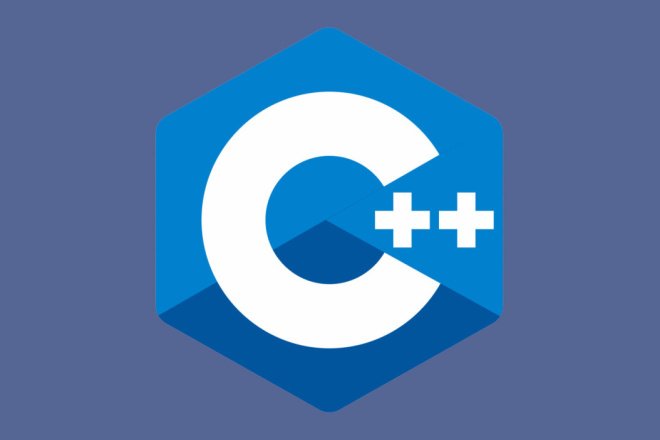

- Семантика: многопарадигмальная: обтекаемо-ориентированная, обособленная, сквозная, программируемая
- Тип исполнения: скомпилированный
- Год выхода: 1983
- Автор: Бьорн Страуструп
- Расширения файлов: .cc, .cpp, .cxx, .c, .c++, .h, .hpp, .h h, .hxx или .h++
- Версия: C++23 (19 октября 2024 г.)
- Система типов: статическая
- Диалекты: ISO/IEC 14882 C++
- Под влиянием: Si, Simula, Algol 68, Clu, ML и Ada
- Веб-сайт: isocpp.org